20071231
2007년 마지막날에 저 때문에 슬픈했던 분이 있다면 정말 미안합니다. 저 때문에 행복했다면, 그럴분이 없겠지만 있다면 고맙습니다. 전 행복해 하는 사람을 보면 저도 행복해지곤 합니다. 찰리브라운처럼요. 많이 많이 행복하십시오. 건강하십시오.
마마, 마마, 와카다와 AT Field도 이미
The more one has, the more one wants. The more learned a man is, the more modest he should be.20071230
Geranium http://www.flickr.com/photos/agapanthus/1876377194/20071228
귀신에게 홀린 기분이 들땐 자리를 박차고 일어나자.20071224
건버스터 안노 히데아키 귀여워 귀여워 무엇을 원하는지 알지 못하고 단지 원하기만 해 I don't know what I want, just want. - Beautiful World, Utada Hikaru
만드는 사람의 만족 사용하는 사람의 만족 The satisfaction of creators. The satisfaction of users.
http://www.geocities.com/surrealogre/depressed.jpg 튼 입술 아주 협소한 공간속에서 숨을 내시며 아주 협소한 사람속에서 말을 하며서 나의 영혼이 충만하길 바라는 것 겨울철에 입술이 안트길 바라는 것
The chapped lips On breathing at the small room. On talking at a among of very few people. To want my soul to be filled. To want my chapped lips to get better.
Preface There is no meaningful day in my life so far.
내가 좋아하는 사람이 나를 좋아해 주는건 …… 기적..이란다 - 어린왕자 中 에서 -20071221
20071220
모르겠습니다.20071215
Like an angel who has forsaken sympathy. Rise up, young boy, and make yourself a legend. Blue skies and beckoning winds. Are trying to open the door of your heart. But you just gaze at me, and you do not respond. You just stand there smiling vacantly. Your eyes hold such innocence. You're blind to the fate that will soon come to pass. But it's summoning you with a gentle caress. You seek it without knowing why. But someday I know that you will be awakened. And your eyes will finally see There wings on your back are just waiting to guide you The future will soon set you free This cruel thesis, a spiteful angel's litany. Will soon soar form the window of your destiny. White hot pathos, a desecrated symphony. Stay true to this and don't betray your memory. Come now, reach out you must embrace reality. Rise up, young boy, and make yourself a legend.
20071214
몇년전부터 겨울이면 어김없이 찾아오는 신체상의 4가지 변화 손바닥의 허물이 훌러덩 벗겨진다. 코안이 헌다. 얼굴에 각질이 많이 일어난다. 허벅지가 가렵고 우둘두둘한 반점이 생긴다. The 4 changes always show up in my body on the winter from a few years - The skin of the palm of the hand is peeled off. - The sores inside my nose. - Lot of psoriasis in my face. - The red itching bumpy spots on the insdie of my thigh. D.R.Y. Don't Repeat Yourself K.I.S.S Keep It Short & Simple R.T.F.M. Read The Fucking Manual20071213
답은 없다. No perfect solution. 원래 그렇잖아. 공학이란게. It's by natural. Engineering is. 얼마나 근사화 시키는 거잖아. You know this is how close to approach. 적절함을 위해 To properness 존중, 의사소통, 용기, 단순하게 Respect, Communication, Courage, Simple20071208
ECMA - European Computer Manufacturers Association Morpheus : Your mind makes it real. 이성적이기보다는 적절하라. Should be reasonable rather rational. http://www.eslhq.com/forums/esl-forums/english-questions/reasonable-vs-rational-2510/ I had a students ask me what the difference is meaning and usage is between reasonable and rational. I was pretty stumped but answered 'reasonable' is a feeling or emotion where 'rational' is based on logic. what do you think.
초속 3cm으로 걸어시는 한 할아버지 농담아니고 지팡이 짚어가면서 정말 정말 느리게 걸어시는 한 할아버지가 있습니다. 한걸음 한걸음 내딛는게 힘들어 보입니다. 세월의 무거움이 그렇게 걸음을 느리게 만들었겠지요. 그리고 헛기침을 매우 크게 하십니다. "어이고~~" 왜 그렇게 헛기침을 크게 하시는지 정확히 모르겠지만 아파트 전체에 쩌렁쩌렁 울립니다. 저도 세월의 무거움을 조금씩 느끼는데 저도 언제가는 저 할아버지처럼 늙어 가겠죠. |
An old man wakling 3cm per second. There ia an old man very very slowly walking with cane. It seem to be very hard to step for him. I think the weight of time made him so slow. And he had a dry cough very loudly. "Ahh~~" I don't know why he did. It roared all around apartment. I felt the weight of time sometimes too, it becomes me to be old like him. |
어느 헤어디자이너 전 약간 말이 없는 편입니다. 친한 분들과 말이 많은 편이지만. 그리고 약간 낯을 가리는 편입니다. 그래서 낯선 사람과는 이야기를 잘 못하는 편입니다. 오늘 머리를 깍았는데 원래 말을 잘 안하고 "네" "이렇게요" 이정도의 단답형 응답이 전부 였는데 오늘은 원장 아주머니가 아니고 제가 보기에는 해바리기 머리 혹은 작은 사자머리를 한 여자 헤어디자이너 분이 짤라 주셨습니다. 머리가 중간쯤 짤랐을 때 부터 자연스럽게 대화가 오고 갔습니다. 전 머리를 자를 약간 긴장하는 편인데 대화를 하니깐 이 긴장감이 사라져 버렸고 대화도 너무 즐거웠습니다. "전 김밥 안먹을래요. 꿈에도 김밥이 나와요." 저의 머리를 짜르면서 다른 분들과 저녁을 뭐 먹을지 이야기 하다가 이렇게 말을 하였습니다. 너무 웃겼습니다. 전 아침에 김밥을 먹거던요. 다 자른 후에 왁스로 세팅을 좀 해주셨는데 이렇게 마음에 들기는 처음입니다. 다음에도 그 분이 저의 머리를 짤라 주시면 좋겠습니다. 감사합니다. |
A cute hair designer. I'm a man of few words. But I'm talkative with intimate people. And I'm little shy. So I don't have a good talk with strange people. Today I had my hair cut. Usually I said short words like "yes", "this way". Today a cute hair designer who has hair style like a sunflower or a little lion cut my hair. When it was in the middle cutting we started to talk natually. I tend to be nervous with cutting but it went away while talking with her. It's very fun. "I'm not going have kimbab. kimbak showed up in my dream finally." she said that while talking about what having dinner. It made me laught. I used to have kimbab in the morning. After cutting she set my hair with some wax. It was first time for me to be totally pleased about my hair cut. I like to have haircut with her next time. Thanks. |
20071206
피곤하기 전에 쉬어라. Get some rest before you're getting tired.20071205
dominant <-> recessive EJB Transaction attributes Required RequiresNew Supports NotSupported Mandatory Never20071204
선인장 빨간색 저녁부터 보라색 새벽부터 난 그렇게 거기에 멍하니 서있네
Cactuses From red dusk. From violet dawn. I'd been standing there blankly like that. |
20071203
Big umbrella project 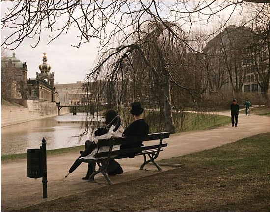 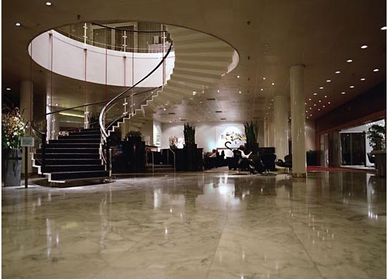 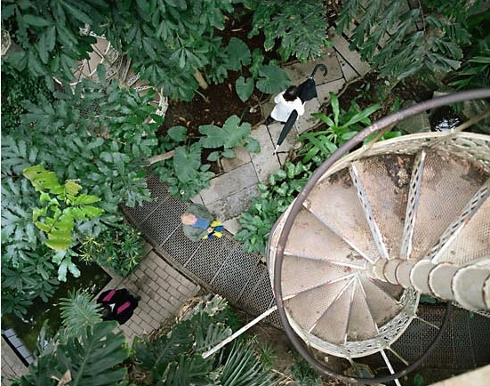 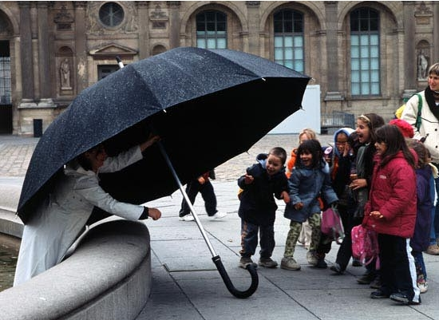20071202
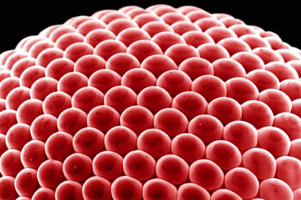 http://blog.daum.net/ilsimsycheonzoo/1330101520071130
Tracing Java Execution Five Easy Ways * Basic - breakpoints * Primal - debug messages * Hot Shot - dynamic proxy * Brute Force - run-time profiler * New Age - through aspects AT 필드 AT Field 인간도 우주 The human is the Universe.20071129
컴퓨터 그래픽스는 예술과 과학 그리고 공학과 수학이 만들어내는 종합 예술이다. The computer graphics is the art, science, engineering, math. 꼭. 웃을일만은 아닙니다 It's not just joking around.20071128
우울 The depression 우울할때 노래구나. When derpessed, listen to the music and sing. 결과는 모르겠지만 끝까지 최선을 I don't know the consequence but I just do my best. 최근 4주간 새 게시물이 없습니다. There is no new articel for last 4 weeks. 코딩 완전 못합니다 QnA가서 제가 올려놓은 질문 보시면 웃음부터 나오실듯 ㅎㅎ I'm not familiar with coding. When you see my post in QnA, you'll laught. 이젠 다 기록해버릴테다. Now I write down all things.20071125
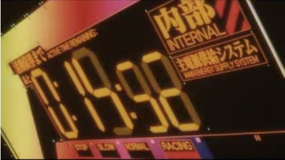20071121 - 준비물
Test Case Monitor Resource20071120
http://www.flickr.com/photos/sylviacole/473318916/ 삶이 서툴러서요. I'm not good at my life. 어디로 가고 있는지 어디에 있는지 모르겠습니다. I don't know where I'm going and where I'm . 멘탈 트레이너가 필요합니다. I need my mental trainer. 유치한 시를 적고 싶습니다. I want to write an unrefined poem.20071115

 fergomar10 (13 hours ago)
thousands of songs will pass,
thousands of lifes will pass,
thousands of years will pass,
thousands of worlds will pass,
millions of stars will die...
... and this treasure of heaven will?
be there forever.
Thanks Bach for giving us an inmortal piece of you.
la musica verdadera...
fergomar10 (13 hours ago)
thousands of songs will pass,
thousands of lifes will pass,
thousands of years will pass,
thousands of worlds will pass,
millions of stars will die...
... and this treasure of heaven will?
be there forever.
Thanks Bach for giving us an inmortal piece of you.
la musica verdadera...
20071110
8년째... For 8 years. 처음엔 몰랐다. I don't know at first. 지금도 모르는게 많지만 그땐 정말 몰랐다. I have a lot of things not to know, at that time I don't know everything. 시간은 경험을 주고 경험은 늙음을 준다. Time gives experience, expereience give old. 모르는 것 때문에 몸과 마음이 많이 상했다. My lack of knowledge hurts my body and soul so much. 이제는 조금은 조금은 알것 같다. Now I think I know just a little. 테스트가 중요하다. The test is important. 커뮤니케이션이 중요하다. The communication is important too. 휴식이 중요하다. And the rest is more.20071028
EVA-01 EVA-03 EVA-05
20071026
많은 사람들이 소프트웨어 생산, 유지보수 작업을 다른 그 무엇에 비유를 많이 하곤 합니다. 건축과 비슷하다. 정원일과 비슷하다. 기타 등등 저도 상투적이지만 비유를 하나 하고 싶은 충동이 솟구쳐 올라 이렇게 몇 글자 적습니다. 최근에 에반게리온이라는 애니메이션을 다시 보고 있습니다. 그러다가 아 저것을 직접 프라모델로 만들어 봤어면 좋겠다라는 생각이 충만했습니다. 그래서 구입했습니다. 가슴이 설레였습니다. 당연히 일본제품이였습니다. 일본어로 된 조립설명서와 수많은 부품들이 눈에 들어왔습니다. 조립설명서를 해석할 수 없어 답답했지만 그림이 있기에 괜찮았습니다. 아하 이렇게 하면 된다 이거지. 꾸부정한 자세로 만들기 시작했습니다. 방바닥이 어질러지기 시작했습니다. 허리도 아프고 담배도 한대 피고 싶고 그런데 멈출 수가 없었습니다. 처음에 설명서를 봤지만 자세히 보지 않고 제 추측데로 만들었습니다. 조금한 부분을 완성되었는데 설명서에 나온 그림과 약간 들렸습니다. 이런 잘못했구나. 다시 조립한 것을 뜯어내기 시작했는데 이게 부품이 작은데다가 완전히 꽉 물려있어서 분리해 내는데 진땀을 뺏습니다. 그 다음부터는 더 집중해서 설명서데로 만들었습니다. 이제는 저의 가정을 집어 넣지 않고 설명서데로 만들었습니다. 점점 조립속도가 빨리지기 시작했습니다. 그러다가 부품이 잘못 끼워졌을때 때 완전히 결합이 되지 않토록 약간의 돌기 및 홈 같은 만들어 놓은 것을 보고 아 이런것 까지 신경을 쓰는 구나 하고 생각했습니다. 큰 부분 부분들이 만들어지고 온전한 모양을 갖추기 시작했고 완성되자 적지 않은 희열을 저도 느꼈씁니다. 다 만들고 보니 어 이 부분은 관절개념이 없어서 움직이지 않네. 어 이 부분은 여기까지 밖에 꺾이지가 않네. 그래서 이런 포즈는 절대 취할 수가 없구나. 그리고 부품판에 떼어낼때 매끄럽게 떼어내지 못해 울퉁불퉁한 것도 눈에 띄였습니다. 그리고 다음날에는 어제 빼먹은 스티커를 붙였습니다. 좀 더 그럴싸 했습니다. 아 도색을 하면 더 멋지겠다.이런 생각도 했습니다. 하지만 도색을 안할려구 합니다. 일이 너무 크지는 것 같아서 입니다. 그리고 곰곰히 생각해보니 이게 소트트웨어 생산, 유지보수와도 일부분이지만 닮아 있구나 이런 생각을 하게 되었습니다. 아참 오늘은 부품판에서 매끄럽게 떼어낼수 있는 전용 툴을 주문했습니다. 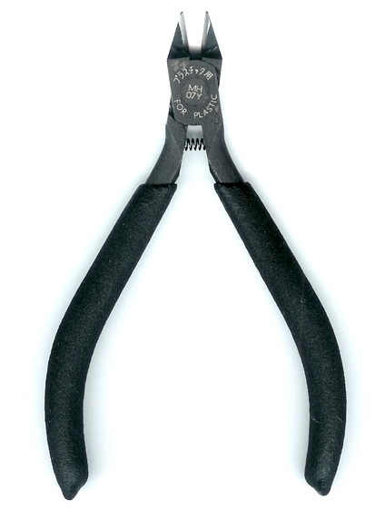20071024
Nerv Seele 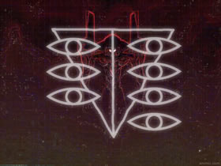20071023
evangelion
20071019
Good!20071015
The English Patient 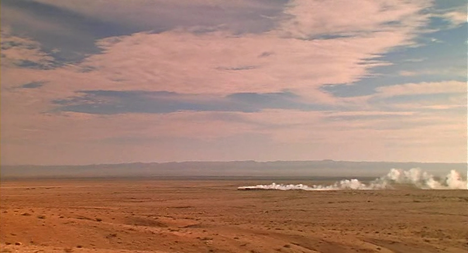 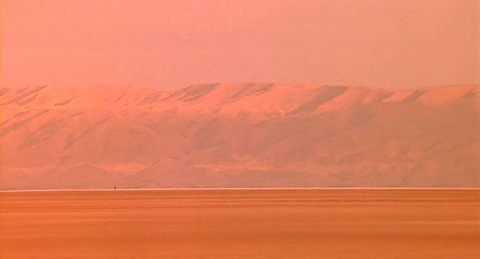 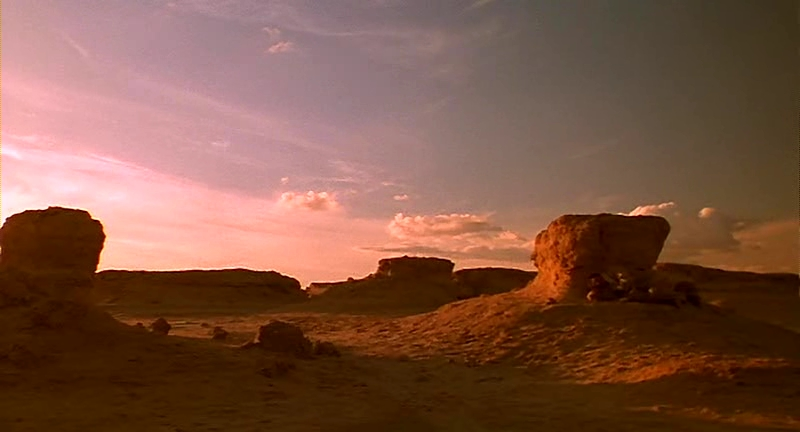 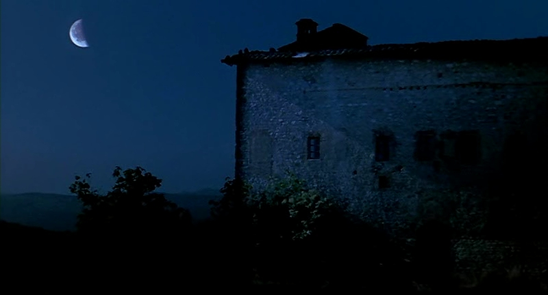 워낙 세련되지 못해 놔서요. --------------------------------------------------- http://www.imsdb.com/scripts/English-Patient,-The.html ALMASY How much did you pay? KATHARINE (delighted) Hello! Good morning. ALMASY They don't see foreign women in this market. How much did you pay? KATHARINE Seven pounds, eight, I suppose. Why? ALMASY Which stall? KATHARINE Excuse me? ALMASY You've been cheated, don't worry, we'll take it back. KATHARINE (bristling) I don't want to go back. ALMASY This is not worth eight pounds, Mrs. Clifton. KATHARINE I don't care to bargain. ALMASY That insults them. KATHARINE (turning to face him) I don't believe that. I think you are insulted by me, somehow. You're a foreigner too, aren't you, here, in this market? ALMASY (of the carpet) I should be very happy to obtain the correct price for this. I apologize if I appear abrupt. I am rusty at social graces. (tart) How do you find Cairo? Did you visit the Pyramids? KATHARINE Excuse me.57th TONY AWARDS MAN OF LA MANCHA http://www.youtube.com/watch?v=sZE4KGB6Wt4 To dream the impossible dream To fight the unbeatable foe To bear with unbearable sorrow To run where the brave dare not go To right the unrightable wrong To love pure and chaste from afar To try when your arms are too weary To reach the unreachable star This is my quest To follow that star No matter how hopeless No matter how far To fight for the right Without question or pause To be willing to march into Hell For a heavenly cause And I know if I'll only be true To this glorious quest That my heart will lie peaceful and calm When I'm laid to my rest And the world will be better for this That one man, scorned and covered with scars Still strove with his last ounce of courage To reach the unreachable star
sway - pussy cat dolls http://www.youtube.com/watch?v=aFPvKGL69kE When marimba rhythms start to play Dance with me, make me sway Like a lazy ocean hugs the shore Hold me close, sway me more Like a flower bending in the breeze Bend with me, sway with ease When we dance you have a way with me Stay with me, sway with me Other dancers may be on the floor Dear, but my eyes will see only you Only you have that magic technique When we sway I go weak I can hear the sounds of violins Long before it begins Make me thrill as only you know how Sway me smooth, sway me now Sway me, make me Thrill me, hold me Bend me, ease me You have a way with me Sway with me Sway (sway) (Sway) Other dancers may be on the floor Dear, but my eyes will see only you Only you have that magic technique When we sway I go weak I go weak I can hear the sounds of violins Long before it begins Make me thrill as only you know how Sway me smooth, sway me now Make me thrill as only you know how Sway me smooth, sway me now Make me thrill as only you know how Sway me smooth, sway me now Sway me Sway me Sway me now
In the Mood for Love (trailer) 花樣年華 인생에서 가장 행복한 순간

20071011 - Ephemeral (original version)
http://www.flickr.com/photos/jmquin/284023075/in/set-72157594447994393/20070926 - The Second Impact.
The first impact is Eclipse. The second impact ... TDD. It's new paradigm, new thought, new energy. Don't you think?I'm Test Driven!

20070924
Euler's formula eiπ + 1 = 020070923
N'EX - Narita Express 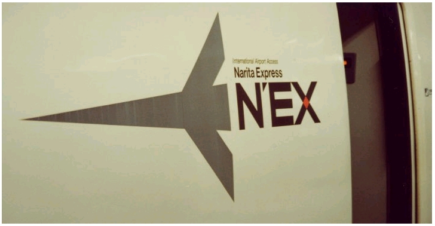 I like a cool logo or trademark. My bro showed me some pictures about his Japan trip. Narita-Tokyo Express logo is a good stuff in my mind.20070921
His name is Nino Maximus Kaier Sozze Soyador & Sparta JackSperou Garrsia.20070912
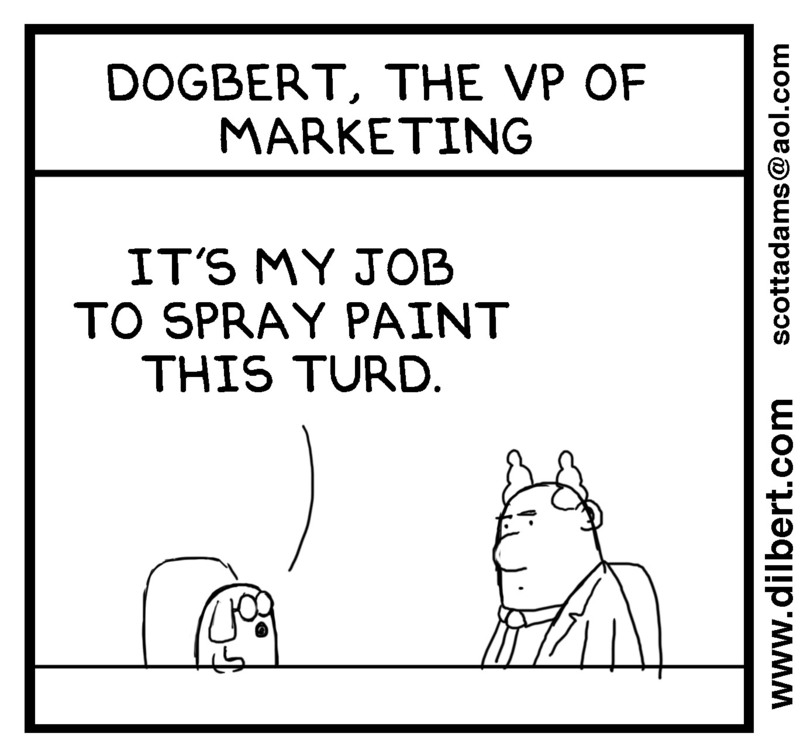 http://dilbertblog.typepad.com/the_dilbert_blog/2007/07/rounders-vs-acc.html I unscramble eggs. - System administrator My job is collecting frogs in a wheelbarrow. - Project Coordinator I make sure turds are well-formed. - XML programmer My work is to be disappointed with the human race and drink a lot of whisky when I'm home. A restart will fix it. - IT Helpdesk I take photos of turds, then polish the turds in photoshop. - Wedding photographer I produce the same virtual turds everyday, only changing colors to make 'em seem different. - Web designer I move turd around from one company to another. - Headhunter I take ideas for turds, and turn them into real turds. - Game programmer I help people lie consistently to management. - Business Intelligence Consultant It´s my job to tell people how faaaantastic the turd looks on them. - Sales assistant in a clothes shop I google, Ctrl+C and Ctrl+V!!! -Analyst with an IT services organization It's my job to not stab Program Managers. - Systems Engineer I make corporate propaganda feel like folksy truthisms. - TV ad director I provide arcane information on a need-to-know basis. - Chief Accountant I'm a turd sculptor - Maintenance programmer. I help stupid people that blame me for their stupidness. - Client service professional Urban Renewal and Pest Control - B-52 Bomber pilot I herd bits. - Oracle Developer I make people feel bad about their work. - Quality Assurance Tester I convince people they don't actually look like turds. - Photographer I'm paid to spend most of the day looking out of the office window. - Pilot I show people how beautiful the Earth could be without their freaking presence. - Mountain Landscape Photographer/Climber I bend turds with my mind. "There is no turd." - Windows Technical Support I am a dumb person trying to find people who are dumber than me so that I become rich. - MBA student I am a machine for converting caffeine and emotional abuse into research publications. - Grad student My job is to interfere with (human) natural selection. - Paramedic My job is to help people accept that life isn't going to get any better. - County Welfare Eligibility Worker My job is to write gibberish that no one will ever read. - Technical Writer My job is to talk in other people's sleep. - College professor. I take pills from big bottles, put them into smaller bottles, and sell them to you for a small profit. - Pharmacist Baby Sitter. - Oracle database Admistrator baby sitting the database, developers and managers My job is to babysit children from ages 16 to 60. - I supervise the front end at a grocery store My job is to chase around the boys in my office and clean up after them. Closely related, I imagine, to a mom. - Secretary I mine bits. - Computer programmer. My job is to progressively elimate my job. - I "automate" software testing. My job is to create work for the Quality Assurance department. - Software Engineer I am an optimistic pessimist. - Disaster Recovery Planner My job is to referee the kids in the sandbox. - Management for IT firm I give kids dreams to crush - Video game tester It's my job to try not to kill the baby today. - Housewife I fight the second law of Thermo Dynamics. - Glass collector in a club20070911
20070908
Rebuild of Evangelion - Trailer Fly me to the moon
And let me play among the stars
Let me see what spring is like
On Jupiter and Mars
In other words hold my hand
In other words darling kiss me
Fill my life with song
And let me sing forevermore
You are all I hope for
All I worship and adore
In other words please be true
In other words I love you
Fly me to the moon
And let me play among the stars
Let me see what spring is like
On Jupiter and Mars
In other words hold my hand
In other words darling kiss me
Fill my life with song
And let me sing forevermore
You are all I hope for
All I worship and adore
In other words please be true
In other words I love you
20070901
Touqe de berimbau(my new cabaca)
20070826
JQuery - write less, do more. http://www.younghoe.info http://www.crosscutter.info 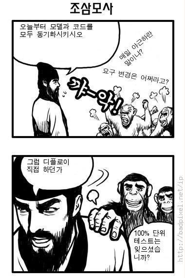 Top 20 Replies by Programmers when their programs don't work The title said it all, no need to continue with description. 20. "That's weird..." 19. "It's never done that before." 18. "It worked yesterday." 17. "How is that possible?" 16. "It must be a hardware problem." 15. "What did you type in wrong to get it to crash?" 14. "There is something funky in your data." 13. "I haven't touched that module in weeks!" 12. "You must have the wrong version." 11. "It's just some unlucky coincidence." 10. "I can't test everything!" 9. "THIS can't be the source of THAT." 8. "It works, but it hasn't been tested." 7. "Somebody must have changed my code." 6. "Did you check for a virus on your system?" 5. "Even though it doesn't work, how does it feel? 4. "You can't use that version on your system." 3. "Why do you want to do it that way?" 2. "Where were you when the program blew up?" 1. "It works on my machine" 수학 방정식 하나 더 이해하는 것보다 삶의 깊이를 더 이해하는게...20070824
아네 거북이 한테 물려본 적이 없어서요. 거북이 한테 물리게 될 기회가 생기면 물려보고 말씀드리겠습니다. Uhm.. well, I have never get bitten by tortoise. So if I have a chance to get bitten, let me get bitten and then let you know that. 너는 개념을 앙코르와트로 효도관광 보냈니?20070823 - 여자, 정혜(The Charming Girl)

20070817
Same Dude http://www.youtube.com/watch?v=FhZY7BOY04020070815
American Dad - When Pigs Fly http://www.youtube.com/watch?v=GoSsZRe0JZ8 Bubble Coral And Shrimp revisted. 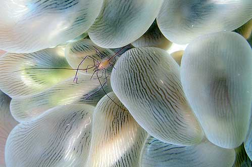20070814 - The tarsier revisited.
Look at that for about 10 secs, you will see a tarise's wink. from http://www.oreilly.com/
from http://www.oreilly.com/
 from http://www.flickr.com/
from http://www.flickr.com/
20070813
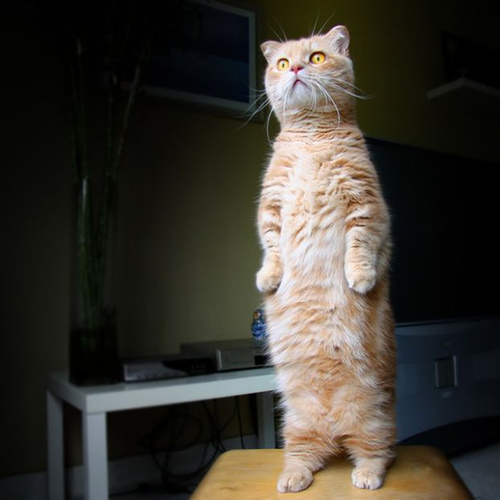20070730
196920070611
아무리 생각해도 난 너를20070605
Berimbau Tab 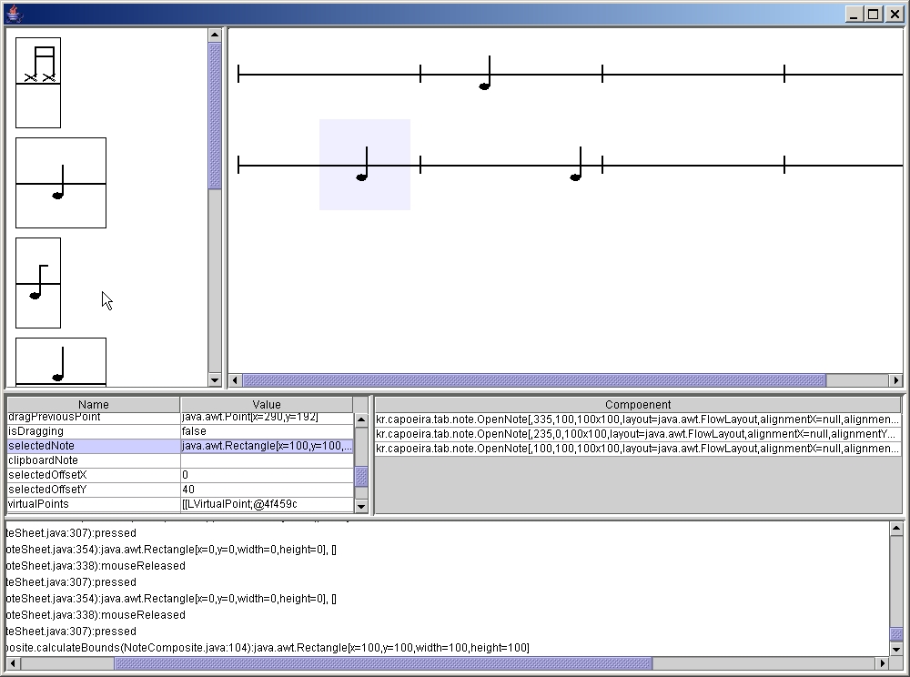20070526
http://www.youtube.com/watch?v=tBUJ_z6TSiA20070521
Calla Lily Madonna Lily20070520
20070424
Queen - Bohemian Rhapsody http://www.youtube.com/watch?v=irp8CNj9qBI20070423
casamento 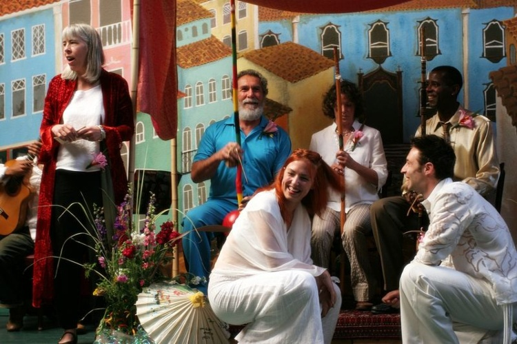 Frog Toad Frog Toad 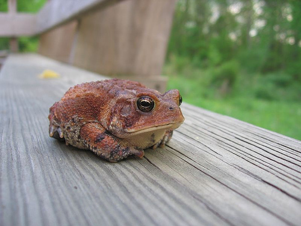

20070419
Untitled http://www.flickr.com/photos/s_e_b_/465643543/20070419
Aluminum Alloy Volcanic A fine cone hedgehog 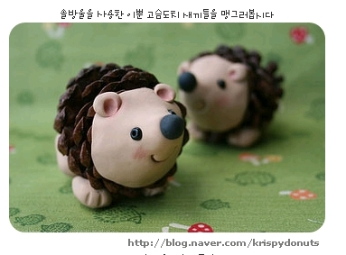20070416
아따맘마 Full Yellow Moon20070413
Keepon Dancing to Spoon http://www.youtube.com/watch?v=3g-yrjh58ms20070404
Alex Playing Berimbau To Lily-Jane. - http://www.flickr.com/photos/gavsten/283755593/ 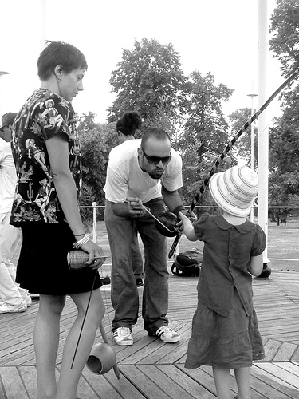 Some Roeses For You. - http://www.flickr.com/photos/dachkammer/110259829/20070320
Smells like teen spirit http://www.youtube.com/watch?v=rEUpKzoEW-E20070310
Salvador Dali20070307
Trancoso http://www.youtube.com/watch?v=0B-bPr_-WkU20070303
Apocalyptica - The Unforgiven http://www.youtube.com/watch?v=xqUXDdJ3C-c Hit me baby one more time http://www.youtube.com/watch?v=0fJCvLv1AoE Tank! - Cowboy Bebop http://www.youtube.com/watch?v=v-TAxm00jOg 마음의 짐을 들고 여유롭게... 그렇게 부끄럽지 않게20070226 - ジョゼと虎と魚たち
Joje, a tiger and fishes 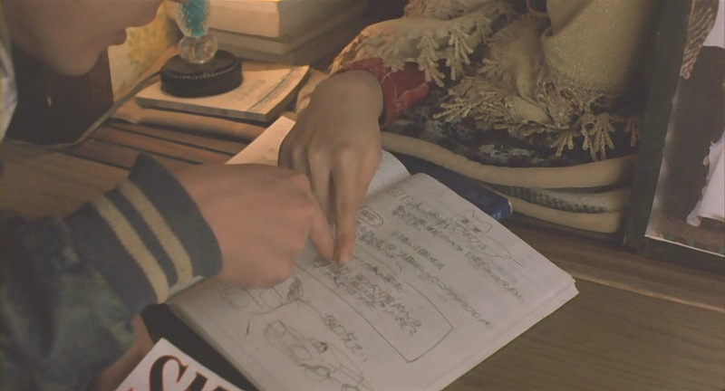20070205 - Can you call yourself a doctor?
20070203 - Flex
20070113 - luta46
more information20070101 - to be loved as to love
 Band Of Brothers
Part 6. Bastogne
의무병 Eugene Roe의 대사중에서
Oh load, grant that I shall never seek so much
to be consoled as to console,
to be understood as to understand
or to be loved as to love
with all my heart.
With all my heart.
------------------------------------------------
거룩하신 주여
위로 받기보단 위로하려고
이해 받기보단 이해하려고
사랑 받기보단 사랑하려고
노력하게 하여
주시옵소서
Band Of Brothers
Part 6. Bastogne
의무병 Eugene Roe의 대사중에서
Oh load, grant that I shall never seek so much
to be consoled as to console,
to be understood as to understand
or to be loved as to love
with all my heart.
With all my heart.
------------------------------------------------
거룩하신 주여
위로 받기보단 위로하려고
이해 받기보단 이해하려고
사랑 받기보단 사랑하려고
노력하게 하여
주시옵소서